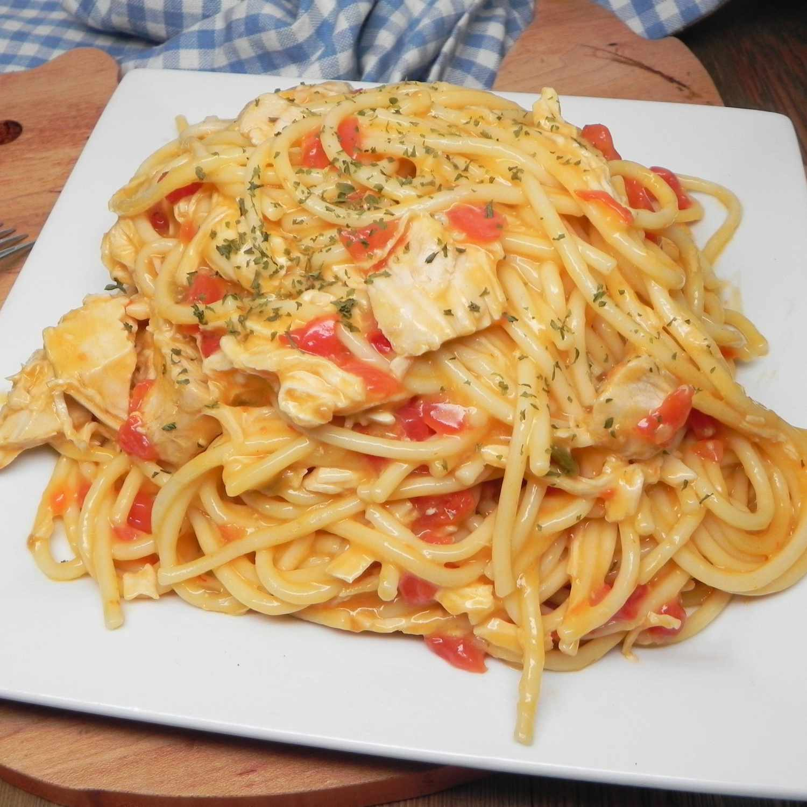

Chicken Spaghetti

Description:
The best plate of noodles you can get when you go out with the dangerous nights crew.
Best served to those who USED to be a piece of shit.
Ingredients:
- Salt and freshly ground black pepper
- 1 pound spaghet
- 1 tbsp olive oil
- 1 medium onion, chopped
- 1 medium red bell pepper, seeded and chopped
- 1 1/2 pounds boneless skinless chicken thighs cut in to 1-inch pieces
- 1 tsp chili powder
- 1/4 cup butter
- 1/4 cup all purpose flour
- 2 cups milk
- 1 cup chicken broth
- 2 cups shredded cheddar cheese, divided
- fresh parsley, minced, for garnish
Steps:
- Preheat oven to 400 degrees. In a large pot, bring 4 quarts water and 1 tablespoon salt to boil. Add spaghetti and cook until al dente, about 9 to 10 minutes. Drain well.
- Meanwhile, in a large skillet over medium-high heat, heat olive oil until shimmering. Add onion and bell pepper and cook until softened, about 5 minutes.
- Add chicken and chili powder and season to taste with salt and pepper (I like 1 teaspoon salt and ½ teaspoon pepper). Cook until chicken is golden brown, about 5 to 7 minutes. Transfer chicken and vegetable mixture to a bowl.
- Return the Dutch oven to medium-high heat and melt butter. Whisk in flour and cook until lightly browned, about 1 minute. Whisk in milk and chicken broth and cook until thickened, about 3 to 5 minutes.
- Season to taste with salt and pepper (I like 1 teaspoon salt and ½ teaspoon pepper). Do not skip this step or your casserole may be bland!
- Stir in 1 cup cheddar cheese. Add cooked spaghetti and chicken and vegetable mixture and toss until well combined. Transfer to a 3-quart or larger baking dish and top with remaining 1 cup of cheese.
- Bake until hot and bubbly, about 20 to 25 minutes (a chicken piece should register 165 degrees on an internal thermometer). Let stand 5 minutes before serving. Garnish with fresh parsley if desired.